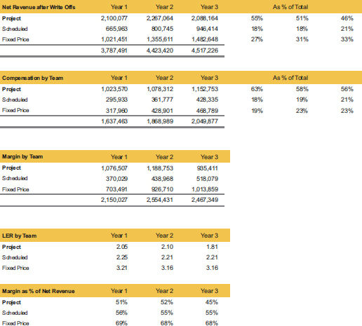

You can see in table 9.6 that the billed hours before write-offs show that the Project team is putting in the hours! Most businesses would consider them the key driver of their business. But in the world I live in, it is your output and your effectiveness that matter (see table 9.7).
Service segment summary with write-offs
After we look at write-offs in table 9.7, you can see that the project revenue dropped in significance to the total. In our experience in dealing with service businesses, this is about as far as they take their analysis, other than net revenues by customer. Let’s take the analysis to the next level! See table 9.8.
Service segment summary with LE

Since we can attach the labor by team to the net revenues, we now know the margin by team that tells true story in table 9.8. Margin in this example would also be the same as contribution margin, since there is no cost of goods sold in this example, just labor.
In year 3, the fixed price team produces the most margin. They have fewer write-offs than the projects team, and their labor consistently produces at a higher LER. This is an excellent example of how taking these extra steps to analyze performance can prevent you from making the mistake of pushing the least profitable service just because it is the biggest top line.
A robust system would also allow you to know this information by customer, and even by employee. You have to interpret that information in context, but it is invaluable to have. If you know LER by customer, you can establish a minimum expected target, and any relationship that falls below the minimum is reviewed. You should always review first if it is your performance or oneoff issues that were unforeseen. Otherwise, you would choose to re-price or re-scope for future work, or disengage from the customer. You would also review the “unforeseen” issues and improve your ability to spot those on future projects.
A couple of insights from this data:
Since we now have this framework, it is easy to do capacity forecasting by team, should you get to the correct LER, as shown in table 9.9.
Service segment summary with forecasting
By identifying the potential LER for each team, you can back into targeted performance.
Segment analysis is the power tool for all growing businesses, and this concept is just as relevant for a $1 million business as it is for a $1 billion business. This approach also allows you to share data with a segment leader and not get into costs or revenues they have no control over. While I am a fan of open book management, not every business has laid the groundwork to share data. Using segment data can be a baby step towards more data sharing with your team, and helping them understand the direction in which you want to lead them.